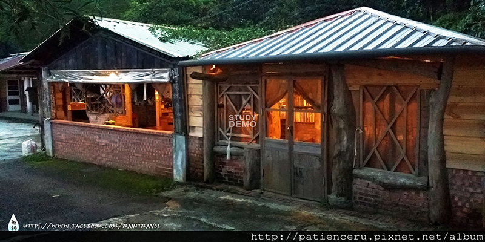
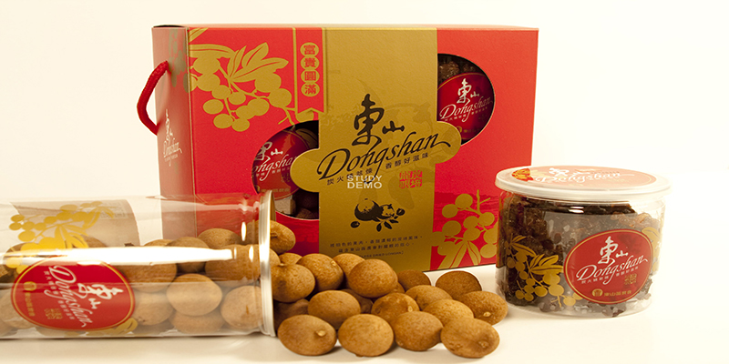

首頁
環境介紹
咖啡館

咖啡小木屋
在小木屋喝咖啡

精緻禮盒
我看不出來他是什麼
門口庭院
漂亮哦
Previous
Next
喝咖啡的好處︰ 根據美國俄亥俄州立大學1994年的研究，咖啡因的確能提高清醒度， 能提高細胞內環磷腺?的含量，小劑量能興奮大腦皮層， 振奮精神，改善思維，消除疲勞，加快反應，提昇工作效率。 大劑量則可興奮延腦呼吸中樞和血管運動中樞， 增加呼吸頻率，造成過度刺激， 產生焦慮、興奮、頭痛、失眠、心神不寧。
喝咖啡的好處︰ 根據美國俄亥俄州立大學1994年的研究，咖啡因的確能提高清醒度， 能提高細胞內環磷腺?的含量，小劑量能興奮大腦皮層， 振奮精神，改善思維，消除疲勞，加快反應，提昇工作效率。 大劑量則可興奮延腦呼吸中樞和血管運動中樞， 增加呼吸頻率，造成過度刺激， 產生焦慮、興奮、頭痛、失眠、心神不寧。
喝咖啡的好處︰ 根據美國俄亥俄州立大學1994年的研究，咖啡因的確能提高清醒度， 能提高細胞內環磷腺?的含量，小劑量能興奮大腦皮層， 振奮精神，改善思維，消除疲勞，加快反應，提昇工作效率。 大劑量則可興奮延腦呼吸中樞和血管運動中樞， 增加呼吸頻率，造成過度刺激， 產生焦慮、興奮、頭痛、失眠、心神不寧。